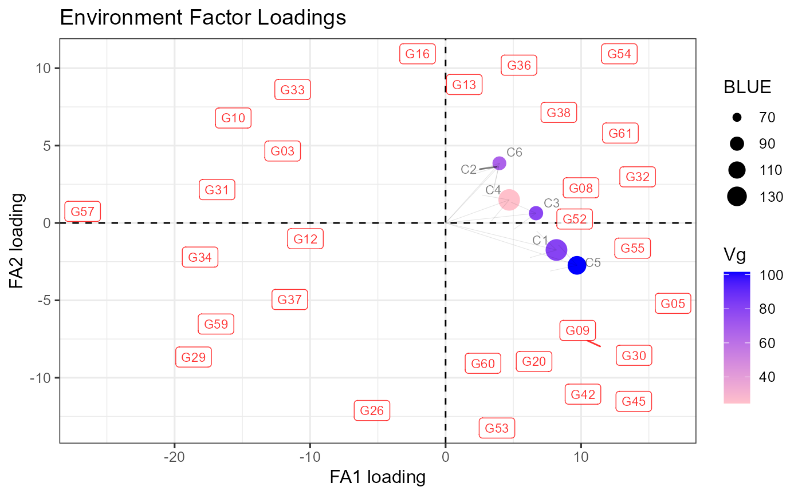
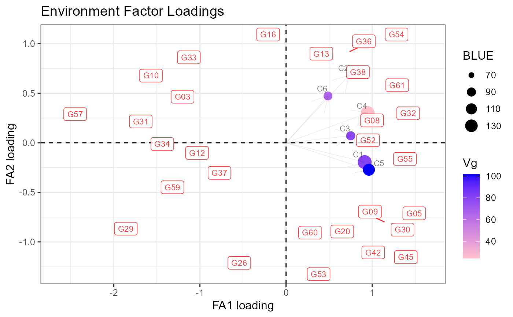
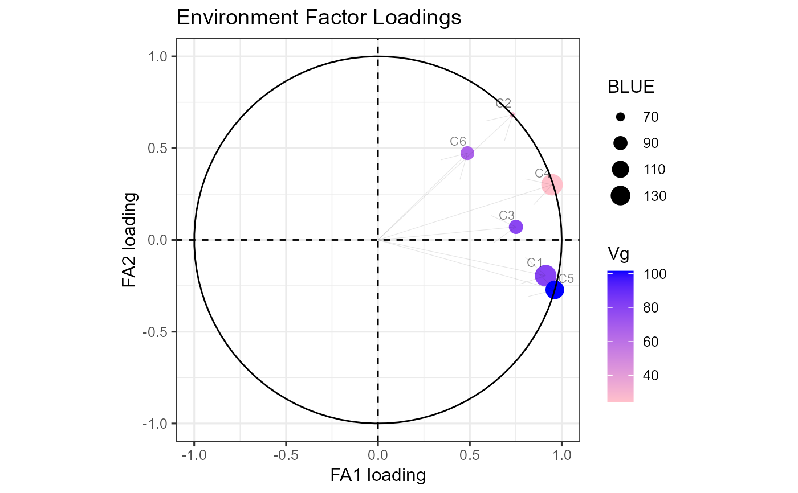
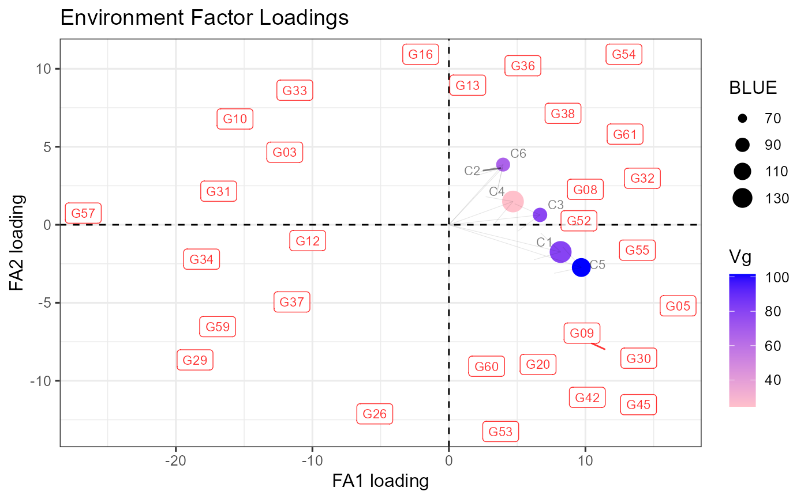
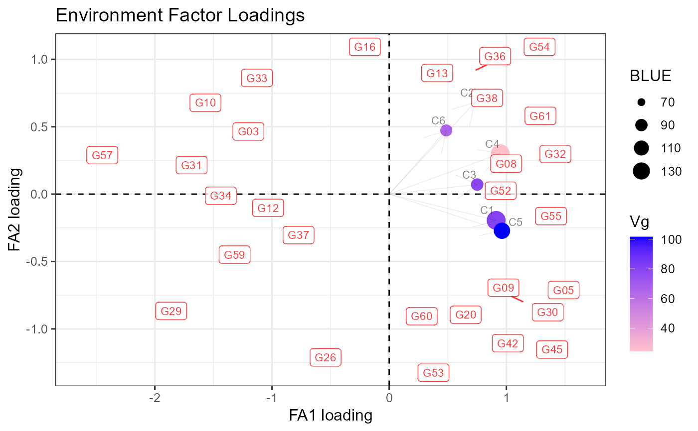
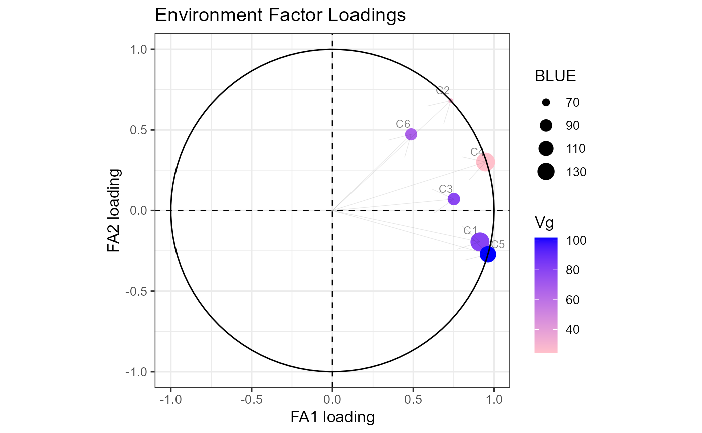

Factor Analytic Summary
Usage
fa_summary(
model = NULL,
trial = "trial",
genotype = "genotype",
BLUEs_trial = NULL,
mult_fa1 = -1,
mult_fa2 = 1,
filter_score = 1.5,
k_biplot = 1,
size_label_var = 2,
alpha_label_var = 0.2,
size_label_ind = 2,
alpha_label_ind = 0.8,
size_arrow = 0.2,
alpha_arrow = 0.2,
base_size = 12
)Arguments
- model
Factor Analytic Model (ASReml object)
- trial
A character string indicating the column in data that contains trials.
- genotype
A character string indicating the column in data that contains genotypes.
- BLUEs_trial
A data.frame containing BLUEs for each trial.
- mult_fa1
A constant to multiply the first loading. Must be 1 or -1. (-1 by default)
- mult_fa2
A constant to multiply the second loading. Must be 1 or -1. (1 by default)
- filter_score
A numeric value to filter genotypes by the distance from the origin.
- k_biplot
A numeric value to multiply the scores in the biplot.
- size_label_var
A numeric value to define the label size for the variables.
- alpha_label_var
A numeric value between (0,1) to define the label for the variables.
- size_label_ind
A numeric value to define the label size for the individuals.
- alpha_label_ind
A numeric value between (0,1) to define the label for the individuals.
- size_arrow
A numeric value to define the arrow size.
- alpha_arrow
A numeric value between (0,1) to define the arrow.
- base_size
A numeric value to define the base size.
Value
An object with a list of:
- loadings
A data.frame containing the first and second loading for each trial.
- loading_star
A data.frame containing the first and second loading rotated for each trial.
- Gvar
A matrix of the estimated variance-covariance between trials.
- Cmat
A matrix of the correlation between trials.
- summary_loading
A data.frame containing a summary of the loadings.
- paf_site
A data.frame containing the percentage of variance explained for each component and for each trial.
- var_tot
A numeric value of the total variance.
- scores
A data.frame containing the scores for each genotype.
- plots
A list with different plots. Includes a plot for the loadings, biplot, biplot_scaled and loadings_c.
Examples
# \donttest{
library(agridat)
library(agriutilities)
data(besag.met)
dat <- besag.met
results <- check_design_met(
data = dat,
genotype = "gen",
trial = "county",
traits = c("yield"),
rep = "rep",
block = "block",
col = "col",
row = "row"
)
out <- single_trial_analysis(results, progress = FALSE)
met_results <- met_analysis(out, vcov = "fa2", progress = FALSE)
pp <- met_results$trial_effects
model <- met_results$met_models$yield
fa_summary(
model = model,
trial = "trial",
genotype = "genotype",
BLUEs_trial = pp,
mult_fa1 = -1,
mult_fa2 = -1,
filter_score = 1,
k_biplot = 10,
size_label_var = 3,
alpha_label_var = 0.5,
size_label_ind = 3,
alpha_label_ind = 0.8,
size_arrow = 0.2,
alpha_arrow = 0.1
)
#> $loadings
#> fa1_loadings fa2_loadings
#> C1 8.367225 0.0000000
#> C2 3.075230 -4.3908569
#> C3 6.394677 -2.0112454
#> C4 4.278622 -2.4366537
#> C5 10.054977 0.6540456
#> C6 3.077589 -4.6007432
#>
#> $loading_star
#> [,1] [,2]
#> C1 8.182846 -1.7468491
#> C2 3.924156 3.6520763
#> C3 6.673658 0.6318911
#> C4 4.693046 1.4896999
#> C5 9.696860 -2.7388390
#> C6 3.970282 3.8568450
#>
#> $Gvar
#> C1 C2 C3 C4 C5 C6
#> C1 80.38841 25.73114 53.50570 35.80019 84.13225 25.75088
#> C2 25.73114 28.73666 28.49619 23.85674 28.04954 29.66550
#> C3 53.50570 28.49619 78.96497 32.26112 62.98288 28.93341
#> C4 35.80019 23.85674 32.26112 24.53919 41.42777 24.37826
#> C5 84.13225 28.04954 62.98288 41.42777 101.53033 27.93599
#> C6 25.75088 29.66550 28.93341 24.37826 27.93599 66.56541
#>
#> $Cmat
#> C1 C2 C3 C4 C5 C6
#> C1 1.0000000 0.5353578 0.6715620 0.8060436 0.9312534 0.3520230
#> C2 0.5353578 1.0000000 0.5982069 0.8983858 0.5192897 0.6782803
#> C3 0.6715620 0.5982069 1.0000000 0.7328786 0.7034081 0.3990783
#> C4 0.8060436 0.8983858 0.7328786 1.0000000 0.8299721 0.6031818
#> C5 0.9312534 0.5192897 0.7034081 0.8299721 1.0000000 0.3398144
#> C6 0.3520230 0.6782803 0.3990783 0.6031818 0.3398144 1.0000000
#>
#> $summary_loadings
#> site fa1 fa2 psi Vg BLUE fa1_scaled
#> 1 C1 8.182846 -1.7468491 10.3779630 80.38841 149.75463 0.9126571
#> 2 C2 3.924156 3.6520763 0.0000000 28.73666 65.99443 0.7320287
#> 3 C3 6.673658 0.6318911 34.0279676 78.96497 90.60647 0.7510118
#> 4 C4 4.693046 1.4896999 0.2953006 24.53919 148.12551 0.9473811
#> 5 C5 9.696860 -2.7388390 0.0000000 101.53033 121.77655 0.9623504
#> 6 C6 3.970282 3.8568450 35.9270153 66.56541 88.31651 0.4866279
#> fa2_scaled
#> 1 -0.19483128
#> 2 0.68127379
#> 3 0.07110907
#> 4 0.30072440
#> 5 -0.27181199
#> 6 0.47272427
#>
#> $paf_site
#> fac_1 fac_2 all
#> C1 83.29430 3.795923 87.09022
#> C2 53.58660 46.413397 100.00000
#> C3 56.40187 0.505650 56.90752
#> C4 89.75310 9.043517 98.79662
#> C5 92.61182 7.388176 100.00000
#> C6 23.68067 22.346823 46.02750
#>
#> $var_tot
#> [1] 67.95 10.87
#>
#> $scores
#> Genotype fa1 fa2 distance_orig Score
#> 1 G01 -0.162907114 0.864333514 0.87955168 0
#> 2 G02 0.105626023 -0.083550661 0.13467579 0
#> 3 G03 -1.389037056 0.569069801 1.50108773 1
#> 4 G04 0.559582939 0.320816355 0.64502419 0
#> 5 G05 1.637220690 -0.628815915 1.75382469 1
#> 6 G06 -0.380823622 0.812640322 0.89744689 0
#> 7 G07 -0.001463806 0.028277859 0.02831572 0
#> 8 G08 1.185985249 0.330885059 1.23127817 1
#> 9 G09 1.153477549 -0.802887244 1.40539617 1
#> 10 G10 -1.379112088 0.742188138 1.56613964 1
#> 11 G11 -0.897839579 0.106862883 0.90417674 0
#> 12 G12 -1.221130723 0.002421723 1.22113312 1
#> 13 G13 0.221402119 1.004125762 1.02824484 1
#> 14 G14 0.138258700 -0.114499969 0.17951521 0
#> 15 G15 0.413043958 -0.673321409 0.78991584 0
#> 16 G16 -0.018263089 1.074588820 1.07474400 1
#> 17 G17 0.881967964 0.465522525 0.99728567 0
#> 18 G18 -0.752820119 0.280913277 0.80352374 0
#> 19 G19 0.319953496 -0.614844242 0.69311159 0
#> 20 G20 0.842230016 -0.948250406 1.26827845 1
#> 21 G21 -0.356159104 -0.705582727 0.79037731 0
#> 22 G22 0.704298528 0.262242826 0.75153690 0
#> 23 G23 -0.623360509 -0.545101814 0.82807869 0
#> 24 G24 -0.437087633 0.412328525 0.60088303 0
#> 25 G25 0.494439185 -0.782013670 0.92521105 0
#> 26 G26 -0.356243663 -1.107758555 1.16363163 1
#> 27 G27 0.261819733 0.939925968 0.97571020 0
#> 28 G28 -0.461004335 -0.614053253 0.76784529 0
#> 29 G29 -1.673325734 -0.762576155 1.83889679 1
#> 30 G30 1.204056560 -0.959280343 1.53947101 1
#> 31 G31 -1.499276278 0.110906249 1.50337273 1
#> 32 G32 1.230685960 0.402133956 1.29471991 1
#> 33 G33 -1.316040750 0.758089183 1.51877005 1
#> 34 G34 -1.625145019 -0.116754081 1.62933356 1
#> 35 G35 0.129254735 -0.094184492 0.15992969 0
#> 36 G36 0.728509114 0.915541387 1.17001776 1
#> 37 G37 -0.963154753 -0.390541381 1.03932173 1
#> 38 G38 1.022280072 0.818064261 1.30930733 1
#> 39 G39 -0.530723976 0.112723589 0.54256294 0
#> 40 G40 0.592816686 0.109909921 0.60291941 0
#> 41 G41 -0.192537359 -0.627072710 0.65596556 0
#> 42 G42 0.891032123 -0.996361906 1.33666574 1
#> 43 G43 -0.464624619 0.336867829 0.57389544 0
#> 44 G44 -0.672035171 -0.153673238 0.68938141 0
#> 45 G45 1.202473257 -1.049066580 1.59577023 1
#> 46 G46 0.581010487 -0.356631721 0.68173262 0
#> 47 G47 -0.520019185 0.446985167 0.68572275 0
#> 48 G48 0.866064198 -0.483528062 0.99190049 0
#> 49 G49 -0.050048388 0.465931046 0.46861133 0
#> 50 G50 -0.968073094 0.220007128 0.99275810 0
#> 51 G51 0.915380367 -0.033433182 0.91599072 0
#> 52 G52 1.140825106 -0.053478836 1.14207789 1
#> 53 G53 0.567489561 -1.306684815 1.42459454 1
#> 54 G54 1.094013325 1.008566742 1.48797582 1
#> 55 G55 1.193459273 -0.058610112 1.19489756 1
#> 56 G56 0.059219499 0.130410667 0.14322671 0
#> 57 G57 -2.636899472 0.184533512 2.64334853 1
#> 58 G58 -0.822716396 -0.172518868 0.84060991 0
#> 59 G59 -1.506355281 -0.552979622 1.60464722 1
#> 60 G60 0.089492570 -1.011045935 1.01499892 1
#> 61 G61 1.103801649 0.685186137 1.29917594 1
#> 62 G62 0.266059470 0.641570828 0.69455077 0
#> 63 G63 0.027137577 0.484081506 0.48484157 0
#> 64 G64 0.053860177 0.750449438 0.75237974 0
#>
#> $plots
#> $plots$loadings
 #>
#> $plots$biplot

#>
#> $plots$biplot_scaled

#>
#> $plots$loadings_c

#>
#>
# }
#>
#> $plots$biplot

#>
#> $plots$biplot_scaled

#>
#> $plots$loadings_c

#>
#>
# }